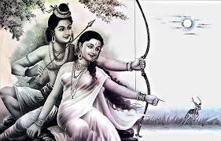

. . . LIFE OF SITA . . .

SITA
Sita also known as Siya, Janaki, Maithili, Vaidehi and Bhumija is a Hindu goddess and the female protagonist of the Hindu epic, Ramayana. She is the consort of Rama, the avatar of the god Vishnu, and is regarded as a form of Vishnu's consort, Lakshmi. She is also the chief goddess of Rama-centric Hindu traditions. Sita is known for her dedication, self-sacrifice, courage, and purity. She is one of the seventeen national heroes (rastriya bibhuti) of Nepal.
Described as the daughter of Bhūmi (the earth), Sita is brought up as the adopted daughter of King Janaka of Videha.[11][12] Sita, in her youth, chooses Rama, the prince of Ayodhya as her husband in a swayamvara. After the swayamvara, she accompanies her husband to his kingdom, but later chooses to accompany her husband, along with her brother-in-law Lakshmana, in his exile. While in exile, the trio settles in the Dandaka forest from where she is abducted by Ravana, the Rakshasa king of Lanka. She is imprisoned in the garden of Ashoka Vatika, in Lanka, until she is rescued by Rama, who slays her captor. After the war, in some versions of the epic, Rama asks Sita to undergo Agni Pariksha (an ordeal of fire), by which she proves her purity, before she is accepted by Rama, which for the first time makes his brother Lakshmana get angry at him.
In some versions of the epic, Maya Sita, an illusion created by Agni, takes Sita's place and is abducted by Ravana and suffers his captivity, while the real Sita hides in the fire. Some scriptures also mention her previous birth being Vedavati, a woman Ravana tries to molest.[13] After proving her purity, Rama and Sita return to Ayodhya, where they are crowned as king and queen. One day, a man questions Sita's purity and in order to prove her innocence and maintain his own and the kingdom's dignity, Rama sends Sita into the forest near the sage Valmiki's ashram. Years later, Sita returns to the womb of her mother, the Earth, for release from a cruel world and as a testimony of her purity, after she reunites her two sons Kusha and Lava with their father Rama.
- "Those who have knowledge of dharma say that truth is the highest dharma"
- "There are three all-powerful evils: lust, anger, and greed"
- "Only the timid and the weak leave things to destiny but the strong AND the self-confident never bank on destiny or luck"
- "Just as people are afraid of serpents they are afraid of people who utter lies"

🤍 JAI SRI RAM 🤍